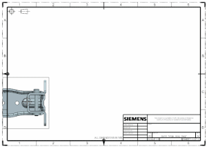
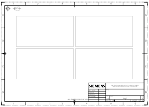
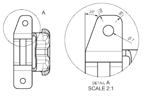

制图视图是天价到图纸页中的二维视图，有三种不同类型的制图视图。
在3D 制图流程中，您直接在图纸页上放置的模型视图称为基本视图。
基本视图可以用于创建衍生视图类型，比如投影视图或剖视图。

使用图纸视图来创建独立的图纸。
2D 图纸视图类似于3D 图纸视图，它们也有视图方向、原点以及比例，v允许几何体在视图间智能投影。
要创建空的图纸视图，右击部件导航器中的图纸页节点并选择添加图纸视图；要创建标准视图集，右击部件导航器中的图纸页节点并选择添加标准视图。

衍生视图基于现有视图，这些视图包括局部放大图，剖视图以及投影视图。
要添加衍生视图，右击视图边界并选择要创建的衍生视图类型。
